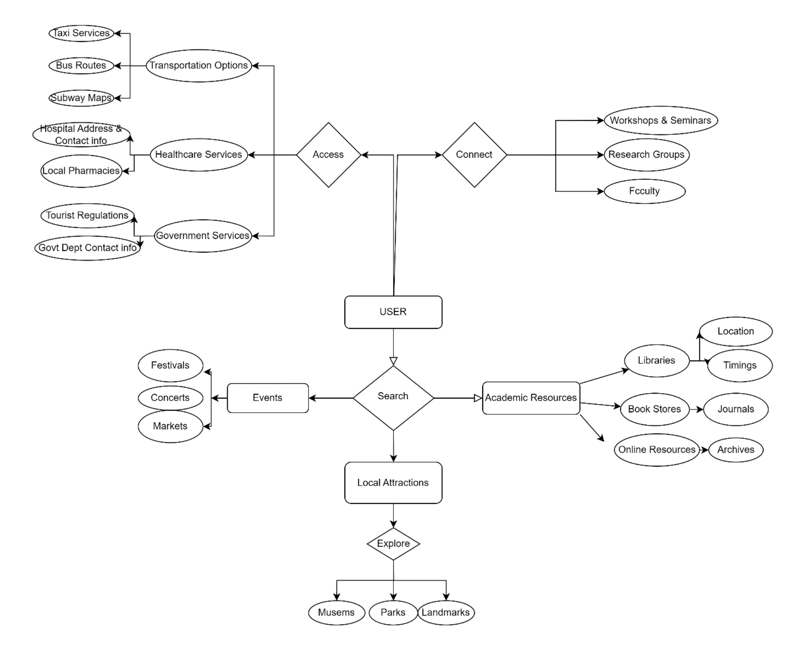

Domain Analysis
Entity-Relationship Diagram
This Entity-Relationship Diagram (ERD) shows the relationships between entities like User, Academic Resource, Attraction, Event, Booking, and Recommendation for students visiting Boston. Relationships like "Access," "Attend," "Utilize," and "Write" link each element, which is a significant part of the students' experience in Boston.
Entities:
User (International Student):
Represents international students studying or visiting Boston who use the website to discover the city, utilize academic resources, and attend events.
- User_id: A unique ID for each student.
- Name: The student's name.
- Email: The student's email address (for communication, notifications, etc.).
- Preferences: The student's interests, such as local culture, education, social events, or outdoor activities. These help personalize recommendations.
Attraction:
Like travelers, international students enjoy discovering Boston's attractions. These could be well-known locations that offer leisure and cultural enrichment, like parks (e.g., Boston Common), historical sites (e.g., Freedom Trail), or museums (e.g., Museum of Fine Arts).
- Attraction_id: A unique identifier for each attraction.
- Name: The name of the attraction (e.g., "Harvard Square").
- Description: A brief overview of what the attraction offers.
- Location: Where the attraction is located (address).
- Hours: The opening and closing times for visitors.
- Admission_fee: The cost (if any) to visit the attraction (students often get discounts).
Event:
International students can interact with the community through local events. Events may include social mixers, concerts, university fairs, and cultural festivals (e.g., the Boston Arts Festival or foreign nights offered by universities).
- Event_id: A unique identifier for each event.
- Name: The name of the event (e.g., "Boston International Student Mixer").
- Description: A summary of what the event is about.
- Location: Where the event is happening (venue or place).
- Date: The date when the event takes place.
- Time: The time the event starts and ends.
- Ticket_price: The cost of attending (if applicable, and often free for students).
City Service:
International students in Boston rely on a number of essential local services. These might include city libraries, health services, public transit (such as the "T"), or community centers that assist students with housing, legal aid, or financial guidance.
- Service_id: A unique ID for each city service.
- Name: The name of the service (e.g., "Boston Public Transit").
- Description: An explanation of what the service provides.
- Contact_info: Information to reach the service (phone, email).
- Location: Where the service is located or how it can be accessed.
Academic Resource:
This entity covers resources like libraries, research centers, and university support services because foreign students frequently look for academic institutions to study at. These include institutions such as the research centers at Harvard, the libraries at MIT, and the Boston Public Library.
- Resource_id: A unique ID for each academic resource.
- Name: The name of the academic institution or library (e.g., "MIT Research Library").
- Description: What the resource offers (e.g., access to books, databases, or study spaces).
- Location: Where the resource is located (e.g., within a campus or public library).
- Opening_hours: When it's open to students or the public.
- Access_requirements: Any specific criteria for access (e.g., student ID or membership).
Review:
In order to assist other students in making sound choices, international students might choose to discuss their experiences with nearby services, attractions, and events.
- Review_id: A unique ID for each review.
- User_id: The student who wrote the review.
- Entity_id: The attraction, event, or service being reviewed.
- Rating: A numerical rating (e.g., 4/5 stars).
- Comment: The student's written feedback.
- Date: When the review was posted.
Booking:
Tickets or reservations are needed for a lot of attractions and activities. Events such as university conferences, special shows in museums, or performances might need reservations for international students.
- Booking_id: A unique ID for each booking.
- User_id: The student making the booking.
- Event_id: The event being booked (if applicable).
- Attraction_id: The attraction being booked (if applicable).
- Booking_date: The date the booking was made.
- Status: Whether the booking is confirmed, pending, or cancelled.
Recommendation:
International students receive individualized recommendations for services, events, and attractions that are relevant to them based on their past activities and interests. They might receive suggestions for events that are related if they regularly look for academic conferences, for example.
- Recommendation_id: A unique ID for each recommendation.
- User_id: The student receiving the recommendation.
- Attraction_id: The recommended attraction (if applicable).
- Event_id: The recommended event (if applicable).
- Relevance_score: How closely the recommendation matches the student's preferences.
Relationships:
1. User ↔ Attraction (Access):
- International students can visit multiple attractions, and each attraction can be visited by many students.
2. User ↔ Event (Attend):
- International students can attend various local or university-hosted events, and each event may be attended by many students.
3. User ↔ City Service (Utilize):
- International students rely on many city services, like public transportation or health services, and each service can support multiple students.
4. User ↔ Academic Resource (Access):
- International students can access various academic resources, and each academic resource can be accessed by many students.
5. User ↔ Review (Write):
- Students can leave reviews for the attractions, events, or services they use. Each review is written by a student but linked to one attraction, event, or service.
6. User ↔ Booking (Make):
- International students can make bookings for events or attractions, with each booking linked to a specific student.
7. Attraction/Event/Service ↔ Review (Receive):
- Attractions, events, and services can receive reviews from multiple students, with each review connected to a specific attraction, event, or service.
8. User ↔ Recommendation (Receive):
- International students receive personalized recommendations for attractions, events, or services based on their preferences, and each recommendation is linked to a single student.